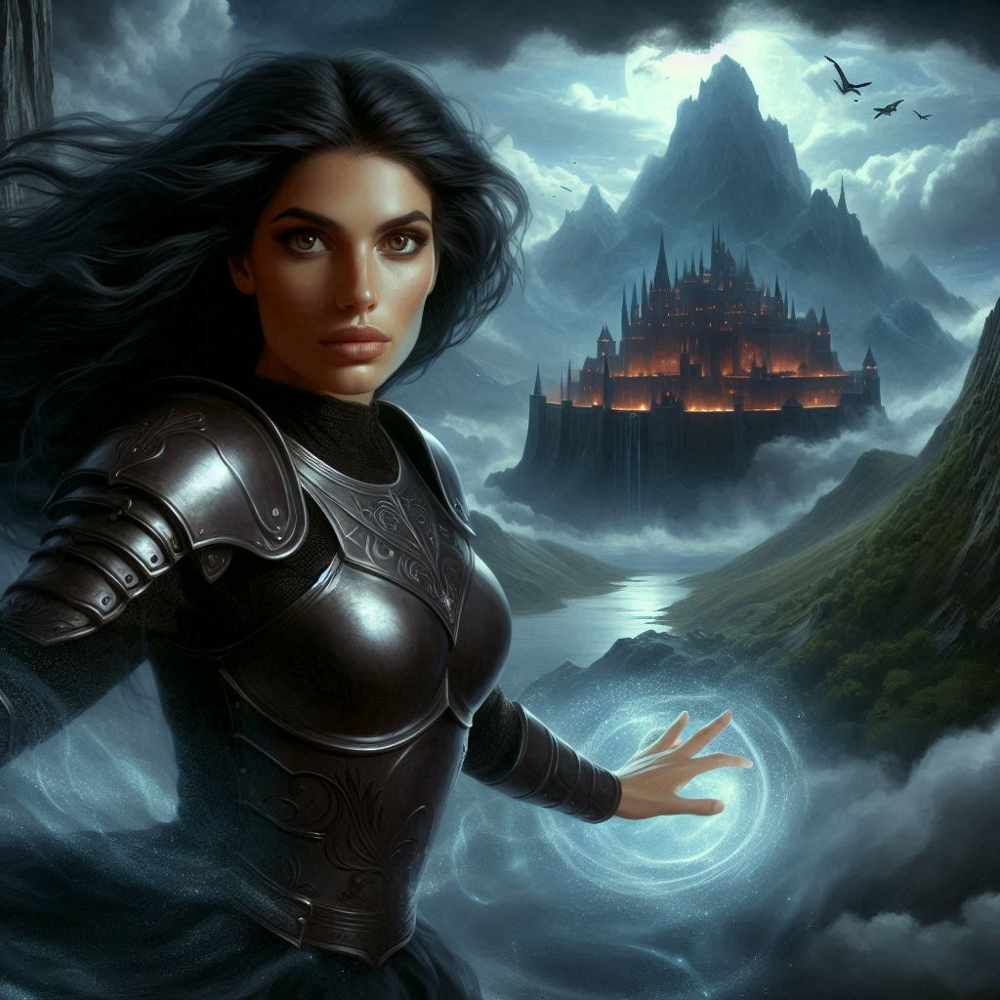

Hawthorn's Treachery
You march through the bleak landscape of the Realm of Shadows, the oppressive gloom pressing down on you with every step. Your heart races beneath the stolen armor of the dark elves, your disguise feeling like a second skin you want to tear off. Every shadow seems to move, every gust of wind whispers of the dangers ahead. Elias, beside you, adjusts his cloak, and Baider, still weak but determined, keeps pace as best he can. Princess Hawthorn leads the way, her silence unnerving.
Baider, his massive form too large for the elvish armor, agreed to pose as your captive. You, Hawthorn, and Elias march beside the half-orc, hoping that your ruse to get into the dungeons of the capital city of the Dark Realm will work. Umbra’Thal.
Umbra’Thal looms in the distance, a dark fortress etched into the mountainside. You know the risks of sneaking into Varis’s stronghold, but there’s no other choice. The relic he possesses could unleash a storm of destruction upon Belladonna, and you can’t let that happen. Still, something about Hawthorn’s demeanor has been off. You’ve noticed her glances, the tension simmering beneath her calm exterior. You push the thoughts away, trying to focus on the mission.
As you draw closer to the fortress, the narrow path winds through jagged rocks and treacherous drops. You can feel the weight of magic in the air, dark and suffocating. You’ve entered Varis’s domain now, and there’s no turning back.
Suddenly, Hawthorn stops. The path narrows here, flanked by towering cliffs on either side. “This is where we part ways,” she says, her voice cold and unyielding.
You freeze. “What do you mean?”
Hawthorn turns to face you, her eyes narrowing. In one swift motion, she pulls a gleaming blade from beneath her cloak and points it directly at you. Elias steps forward, but Hawthorn raises her free hand, a swirl of magic gathering in her palm. “Don’t,” she warns, her voice like steel. “I won’t hesitate to kill her.”
The realization hits you like a punch to the gut. Hawthorn, the woman who fought beside you, who shared in your struggles—she’s betraying you.
“I’m sorry, Kira,” she says, though her voice carries no warmth. “I can’t let you take the treasure. My family... our honor... depends on it.”
Your mind races as you try to make sense of her words. “Honor? So you were planning on betraying us all along just to get to what you think is a monetary treasure?”
Hawthorn doesn’t respond, but her eyes tell you everything. The blackmail, the need for the treasure to restore her family’s status—it all led to this moment. She used you, all of you, to claim the treasure for herself.
Elias growls in frustration, stepping forward again, his hand on the hilt of his sword. “You don’t have to do this,” he pleads. “We can find another way.”
“There is no other way,” Hawthorn snaps. “Varis’s minions would bleed us dry. This treasure will end the blackmail, will restore everything my family lost.” She takes a step closer to you, her grip tightening on her blade. “And you, Kira—you were a tool. A means to an end.”
The betrayal stings more than you expected. You thought Hawthorn was different, thought she understood the weight of responsibility you both carried. But now, standing before you with cold determination in her eyes, you realize just how wrong you were. Your heart clenches, and a familiar sense of isolation returns.
Suddenly, the air shifts around you. A familiar, otherworldly presence swirls in the shadows. From the darkness, Jorsh steps forward, his figure materializing as if he were conjured from the void itself. His eyes lock onto yours, a flicker of something—regret?—crossing his face.
“Seems you’ve found yourself in quite the predicament, Kira,” Jorsh says, his voice a mix of amusement and concern. He glances at Hawthorn, his smile fading. “I can get you out of here. All you have to do is say the word.”
You stare at him, your mind spinning. Jorsh betrayed you once before, but here he is, offering you a lifeline. Is this just another manipulation? Or does he truly want to help you?
Hawthorn’s grip tightens, and the magic in her hand pulses ominously. “Stay out of this, Jorsh,” she warns. “This doesn’t concern you.”
“Doesn’t it?” Jorsh replies, stepping closer. “Kira’s future concerns me more than you know.”
“Don’t be a fool, wizard,” Hawthorn sneers at Jorsh. “I funded your quest this far to stop Varis. Once we have the treasure, I will pay you in full as promised.”
“It’s not about the money,” Jorsh says calmly. “It never has been about the treasure.”
“Oh no?” Hawthorn quips sarcastically, her eyes flickering toward you with amusement, then back at Jorsh. “That’s not what you said when I first put you on my payroll two years ago.”
“You’ve been working for Hawthorn all along?” you grunt at Jorsh.
“I discovered Varis’s evil plot and convinced Hawthorn to fund my quest to stop him,” Jorsh answers. “We had a common enemy and I needed Hawthorn’s resources.”
“But now you're a dark wizard and you don’t need me any more,” Hawthorn smirks. “I had a feeling you would try to betray me and take the treasure for yourself.”
“You’re not listening,” Jorsh says, his patience growing thin. “There is no treasure in Umbra’Thal. The Shadow Realm is deplete of worldly riches. It has a different kind of resource. Dark magic.”
Hawthorn laughs, but there is a hint of doubt in her smug exterior. “Lies!” She raises her hand still glowing with magic and looks at Jorsh dangerously. “Betray me and I’ll kill your little ranger friend right now. Work with me and I’ll double your payment.”
“Kira,” Jorsh says, looking at you with eyes that take you back three years. “There is no gold. There is no treasure. There is an evil army powered by black magic. But I have learned how to control that magic. I’m just missing one critical piece of the plan to save Belladonna. You are the key to helping me stop Varis. You are the missing piece.”
Elias, beside you, is torn between protecting you and confronting Jorsh. You can see the conflict in his eyes. He loves you—he’s said as much—and the thought of losing you to Jorsh, again, must tear him apart. But you can’t think about that now. You have to make a choice.
“Kira,” Elias says. “These two are insane. Let’s take them both out and then go after Varis.” He draws his bow and notches an arrow. This is decidedly dark for Elias, and even Baider raises an eyebrow at your friend’s intensity. “We don’t need them, Kira. Baider and I will take Jorsh. You neutralize Hawthorn.”
Jorsh holds out his hand. “Come with me, Kira. Together, we can stop Varis. We don’t need Hawthorn, or her schemes. I’ll make sure no harm comes to Baider or Elias. I doubt you’ll get any such promise from Hawthorn.”